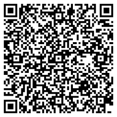
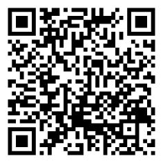

Técnicas de redacción clara y concisa
¿Te ha pasado que tienes una idea genial, pero al escribirla no suena igual de clara? 🤯 Tranquilo, nos pasa a todos. Escribir bien no es un talento secreto, es una habilidad que se entrena. En esta unidad aprenderás a dar forma a tus palabras para que sean claras, directas y con impacto, eliminando lo que sobra y organizando tus ideas para que lleguen al lector sin confusión.
💡 Recuerda: escribir claro es como hablar con tu mejor amigo: sin enredos ni rodeos.
A través de ejemplos, ejercicios prácticos y recursos interactivos, podrás mejorar tu capacidad de comunicar ideas con claridad, lo cual te servirá no solo en tus estudios, sino también en tu vida diaria y futura vida laboral.
Objetivos de aprendizaje
- 🎯 Identificar las características de un texto claro y conciso, reconociendo los elementos que facilitan la comprensión lectora.
- 🎯 Aplicar técnicas de redacción para eliminar redundancias, muletillas y palabras innecesarias en distintos tipos de textos.
- 🎯 Organizar ideas de manera lógica y coherente, estructurando los textos con una secuencia clara y fluida.
- 🎯 Utilizar adecuadamente la ortografía y los signos de puntuación para reforzar la precisión y claridad del mensaje.
- 🎯 Analizar ejemplos de textos bien y mal redactados para reconocer errores comunes y proponer mejoras.
- 🎯 Producir textos breves y coherentes que comuniquen ideas de forma directa y sin ambigüedades.
Actividades prácticas
Ejercicio 1: Identificación de redundancias
En la frase:
"En el mundo actual de la tecnología moderna, el uso de dispositivos inteligentes se ha convertido en una práctica cada vez más común que utilizan muchas personas a diario."
¿Cuál es el grupo de palabras innecesarias o redundantes que debería eliminarse?
Ejercicio 2: Eliminación de ambigüedad
En la frase:
"Pinté el cuadro de mi hermana."
¿Cuál sería la mejor forma de reescribirla para evitar ambigüedad?
Ejercicio 3: Claridad en la expresión
En la frase:
"El perro de mi vecino que ladra mucho se escapó."
¿Cuál es la reescritura más clara?
Evaluación
Comprueba lo que has aprendido. Selecciona la respuesta correcta para cada pregunta.
Recursos para Profundizar
Para ampliar tu conocimiento te recomendamos explorar los siguientes enlaces y documentos:
-
Técnicas de redacción clara y concisa
Ir al recurso -
Habilidades Sociales
Ir al recurso -
Juego Social
Ir al recurso
Bibliografía
https://www.springer.com/la/authors-editors/tutoriales-de-autores-y-revisores/writinginenglish/concise-writing/12111712